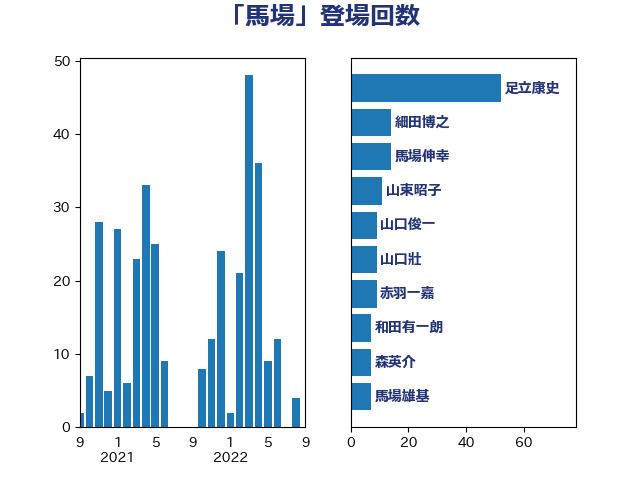

単語「馬場」

| 足立康史 | 日本維新の会 | 52 回 |
| 細田博之 | 自由民主党 | 14 回 |
| 馬場伸幸 | 日本維新の会 | 14 回 |
| 山東昭子 | 自由民主党 | 11 回 |
| 山口俊一 | 自由民主党 | 9 回 |
| 山口壯 | 自由民主党 | 9 回 |
| 赤羽一嘉 | 公明党 | 9 回 |
| 和田有一朗 | 日本維新の会 | 7 回 |
| 森英介 | 自由民主党 | 7 回 |
| 馬場雄基 | 立憲民主党 | 7 回 |
| 馬場成志 | 自由民主党 | 6 回 |
| 高木毅 | 自由民主党 | 6 回 |
| 松沢成文 | 日本維新の会 | 5 回 |
| 藤田文武 | 日本維新の会 | 5 回 |
| 古川俊治 | 自由民主党 | 4 回 |
| 宮本徹 | 日本共産党 | 4 回 |
| 根本匠 | 自由民主党 | 4 回 |
| 石井浩郎 | 自由民主党 | 4 回 |
| 上月良祐 | 自由民主党 | 3 回 |
| 加田裕之 | 自由民主党 | 3 回 |
| 小西洋之 | 立憲民主党 | 3 回 |
| 小野泰輔 | 日本維新の会 | 3 回 |
| 岸信夫 | 自由民主党 | 3 回 |
| 新妻秀規 | 公明党 | 3 回 |
| 林芳正 | 自由民主党 | 3 回 |
| 浜口誠 | 国民民主党 | 3 回 |
| 田嶋要 | 立憲民主党 | 3 回 |
| 関芳弘 | 自由民主党 | 3 回 |
| あかま二郎 | 自由民主党 | 2 回 |
| 伊東良孝 | 自由民主党 | 2 回 |
| 佐藤信秋 | 自由民主党 | 2 回 |
| 太田房江 | 自由民主党 | 2 回 |
| 奥下剛光 | 日本維新の会 | 2 回 |
| 安江伸夫 | 公明党 | 2 回 |
| 山谷えり子 | 自由民主党 | 2 回 |
| 岸田文雄 | 自由民主党 | 2 回 |
| 平木大作 | 公明党 | 2 回 |
| 杉本和巳 | 日本維新の会 | 2 回 |
| 松村祥史 | 自由民主党 | 2 回 |
| 武田良太 | 自由民主党 | 2 回 |
| 河野義博 | 公明党 | 2 回 |
| 浦野靖人 | 日本維新の会 | 2 回 |
| 熊谷裕人 | 立憲民主党 | 2 回 |
| 舟山康江 | 国民民主党 | 2 回 |
| 足立敏之 | 自由民主党 | 2 回 |
| 金子恭之 | 自由民主党 | 2 回 |
| 金田勝年 | 自由民主党 | 2 回 |
| 長浜博行 | 無所属 | 2 回 |
| 鷲尾英一郎 | 自由民主党 | 2 回 |
| こやり隆史 | 自由民主党 | 1 回 |
| 三宅伸吾 | 自由民主党 | 1 回 |
| 三木圭恵 | 日本維新の会 | 1 回 |
| 上杉謙太郎 | 自由民主党 | 1 回 |
| 上野賢一郎 | 自由民主党 | 1 回 |
| 中島克仁 | 立憲民主党 | 1 回 |
| 中曽根康隆 | 自由民主党 | 1 回 |
| 伊藤忠彦 | 自由民主党 | 1 回 |
| 佐々木さやか | 公明党 | 1 回 |
| 吉田とも代 | 日本維新の会 | 1 回 |
| 奥野総一郎 | 立憲民主党 | 1 回 |
| 小田原潔 | 自由民主党 | 1 回 |
| 尾辻秀久 | 無所属 | 1 回 |
| 山本順三 | 自由民主党 | 1 回 |
| 岡田直樹 | 自由民主党 | 1 回 |
| 岩本剛人 | 自由民主党 | 1 回 |
| 平口洋 | 自由民主党 | 1 回 |
| 後藤祐一 | 立憲民主党 | 1 回 |
| 斉藤鉄夫 | 公明党 | 1 回 |
| 斎藤嘉隆 | 立憲民主党 | 1 回 |
| 新藤義孝 | 自由民主党 | 1 回 |
| 有村治子 | 自由民主党 | 1 回 |
| 木原誠二 | 自由民主党 | 1 回 |
| 本田太郎 | 自由民主党 | 1 回 |
| 杉久武 | 公明党 | 1 回 |
| 梶山弘志 | 自由民主党 | 1 回 |
| 橋本岳 | 自由民主党 | 1 回 |
| 池畑浩太朗 | 日本維新の会 | 1 回 |
| 海江田万里 | 立憲民主党 | 1 回 |
| 渡海紀三朗 | 自由民主党 | 1 回 |
| 田村憲久 | 自由民主党 | 1 回 |
| 石井章 | 日本維新の会 | 1 回 |
| 石田真敏 | 自由民主党 | 1 回 |
| 福岡資麿 | 自由民主党 | 1 回 |
| 茂木敏充 | 自由民主党 | 1 回 |
| 菅義偉 | 自由民主党 | 1 回 |
| 藤川政人 | 自由民主党 | 1 回 |
| 藤木眞也 | 自由民主党 | 1 回 |
| 西村康稔 | 自由民主党 | 1 回 |
| 赤嶺政賢 | 日本共産党 | 1 回 |
| 遠藤良太 | 日本維新の会 | 1 回 |
| 野上浩太郎 | 自由民主党 | 1 回 |
| 野田聖子 | 自由民主党 | 1 回 |
| 鈴木貴子 | 自由民主党 | 1 回 |
| 長妻昭 | 立憲民主党 | 1 回 |
| 長峯誠 | 自由民主党 | 1 回 |
| 階猛 | 立憲民主党 | 1 回 |
| 高市早苗 | 自由民主党 | 1 回 |
| 高鳥修一 | 自由民主党 | 1 回 |
| 鬼木誠 | 立憲民主党 | 1 回 |